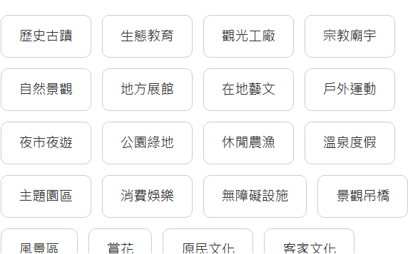

🧭
台南小導遊養成記
四年級上學期 · 第 3 課：導覽主題發想
① 從「去哪裡」到「玩什麼」
只跟朋友說「我們去安平」，他會問：「去吃東西？還是看古蹟？」🤨
只給地點不夠，要有一個「主題」！
🍔 主題就像速食店「套餐」
選「美食探險套餐」就不會排圖書館；選「時光機套餐（古蹟）」就帶他去看古蹟，不是逛百貨。

▶
▶ 點我播放：台南好食小旅行
🏰 舉例：「時光機套餐（古蹟）」
像安平古堡就很適合放進這個套餐 —— 台灣第一座城堡，一走進去就像回到 400 年前。想想看，這個套餐還能放哪些台南古蹟？
🎯 承重測試：「台南自然風景」套餐，你會選哪些景點？（可複選）
② 主題九宮格
一個主題能放進好多景點！幫 8 個主題各找一個台南景點；中間那格，換你自己想主題！
💡 台南旅遊網有這些主題，可以參考：

🧺 想一想：像「水仙宮市場」這種傳統市場，可以放進哪些主題？（可複選）
同一個地方，其實可以符合好幾個主題喔！
③ 我的導覽主題構想卡
把空格填滿，就完成你的第一張導覽構想卡了！
我想要帶
主題是
因為
✅ 交出前自己檢查：
🎴
📮 繳交學習單
確定都填好了嗎？按下面按鈕交給老師（可以重交，會覆蓋前一次）。
🎉